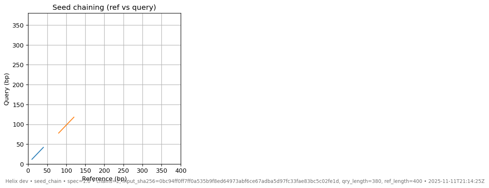
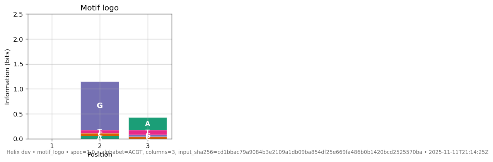

Visualization JSON Schemas¶
Current viz-spec version: 1.0 (backwards compatibility is maintained for at least the next two Helix releases). Every viz-spec JSON embeds this version alongside a timestamp and an
input_sha256so the figure footer cryptographically references the exact JSON that produced it.
- Inspect schemas directly from the CLI:
helix viz schema(lists keys) orhelix viz schema --kind viz_motif_logo(pretty JSON schema). - Generate ready-to-plot payloads + screenshots via
helix demo viz --output demo_viz/—the gallery at the end of this page was produced with that command.
Every renderer under helix viz ... consumes a small JSON contract. The schemas below are append-only; version bumps surface via the spec_version embedded in each viz-spec JSON as well as the figure footer.
Minimizer Density (helix viz minimizers)¶
{
"sequence_length": 12345,
"minimizers": [42, [100, "ACG", 1234567], {"pos": 777}]
}
sequence_length(int) – total sequence length.minimizers(array) – accepts raw positions (int), tuples like[pos, kmer]or[pos, kmer, hash], and dicts containingpos,position, orref_start.
Seed Chain (helix viz seed-chain)¶
{
"ref_length": 1200,
"qry_length": 1100,
"chains": [
[{"ref_start":100,"ref_end":160,"qry_start":90,"qry_end":150}],
[{"ref_start":400,"ref_end":450,"qry_start":390,"qry_end":440}]
]
}
ref_length/qry_length(ints) – axis bounds for the reference and query.chains(list[list[anchor]]) – each anchor needsref_start/qry_startplus eitherref_end/qry_endorlen.
RNA Dot-Plot (helix viz rna-dotplot)¶
{ "posterior": [[0,0.7,0],[0.7,0,0.4],[0,0.4,0]] }
posterior(n×n floats in[0,1]) – the upper triangle is plotted; the lower triangle is ignored.
Alignment Ribbon (helix viz alignment-ribbon)¶
{
"ref_length": 500,
"qry_length": 480,
"cigar": "50M2I20M3D30M",
"ref_start": 100,
"qry_start": 95,
"metadata": {"name":"read_001","score":87}
}
ref_length,qry_length(ints) – axis bounds; fall back toref_end/read_endif omitted.cigar(SAM string) – supportsM,=,X,I,D.ref_start,qry_start(ints) – 0-based alignment anchors.metadata(object, optional) – echoed into the viz-spec and footer for provenance.
Outputs from helix seed map already match this schema via the meta/results structure; helix viz alignment-ribbon accepts those JSON blobs directly.
Distance Heatmap (helix viz distance-heatmap)¶
{
"labels": ["A","B","C"],
"matrix": [[0,0.05,0.10],[0.05,0,0.12],[0.10,0.12,0]]
}
labels(list[str]) – row/column labels.matrix(n×n floats) – symmetric distance matrix (diagonal usually zero).
To plot a matrix emitted by helix sketch compare --json dist.json, pass that file to helix viz distance-heatmap.
Motif Logo (helix viz motif-logo)¶
{
"alphabet": ["A","C","G","T"],
"pwm": [
[0.25,0.25,0.25,0.25],
[0.05,0.05,0.85,0.05],
[0.6,0.1,0.1,0.2]
],
"background": [0.25,0.25,0.25,0.25]
}
alphabet(list[str]) – order for PWM columns; defaults to["A","C","G","T"].pwm(L×|Σ| floats or list of dicts) – probabilities per symbol; each column is normalized if needed.background(|Σ| floats, optional) – background distribution for information-content scaling (defaults to uniform).
Reproducible Viz & Viz-Spec¶
- All viz commands support
--save out.png(PNG/SVG/PDF) and automatically emit a matching.viz.jsonunless--save-viz-specoverrides the destination. Themeta.input_sha256ties each plot to its JSON input. - Every viz-spec includes
kind,meta,primitives,spec_version, and a timestamp; the figure footer mirrors this information for easy provenance. - Tests assert against viz-spec metrics (counts, quantiles, densities) rather than raw pixels, keeping the suite deterministic across platforms.
- Producers such as
helix seed map,helix sketch compare, andhelix motif findnow stampspec_versioninto their JSON outputs so downstream users can validate artifacts. - Whenever you write a PNG via
--save, Helix drops a sibling<image>.provenance.jsonthat captures{schema_kind, spec_version, input_sha256, viz_spec_sha256, image_sha256, helix_version, command}, giving every figure a cryptographic audit trail.
Demo Gallery¶
Run helix demo viz --output docs/assets/viz to recreate the screenshots below (each PNG is paired with a .viz.json containing the schema metadata):
| Visualization | Preview |
|---|---|
| Minimizer density |  |
| Seed chaining |  |
| RNA dot-plot |  |
| Alignment ribbon |  |
| Distance heatmap |  |
| Motif logo |  |